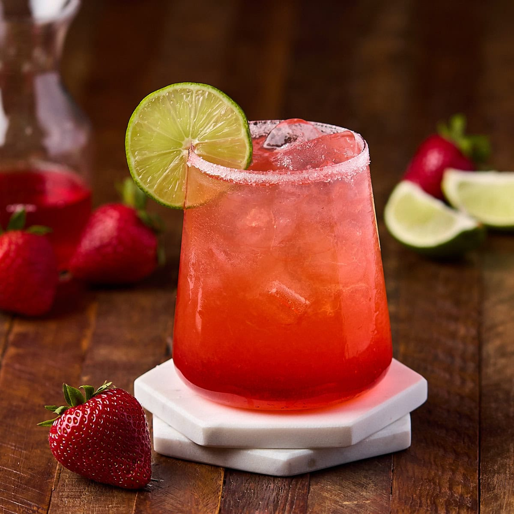

Strawberry Jargarita

Description
You can use any type of jam for this jammy vodka drink. Also a great way to use up the last bits of jam in the glass - just use the jam glass as your shaker.
Ingredients
- 1 tablespoon strawberry preserves, or more to taste
- 1 1/4 fluid ounce tequila
- 1/2 ounce orange liqueur
- 1 lime, juiced
- ice
Steps
- Add strawberry preserves, tequila, orange liqueur, fresh lime juice, and ice to a jar fitted with a lid or shaker. Close jar and shake until slightly frothy.
- Enjoy!
Home